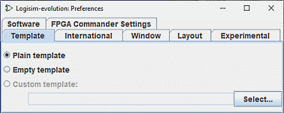

模板选项卡

模板 是一个 Logisim-evolution 文件，每当 Logisim-evolution 创建新项目时都将其用作起点。 此外，如果您现有的 Logisim-evolution 文件具有奇怪配置的环境，则可以使用编辑窗口中的 Reset All Settings 按钮来“重置”环境 Project options | Project | → | Options ... | → | Reset | 。
尽管模板在其他情况下也很有用，但它们特别适合课堂使用，教师可能希望分发模板供学生开始使用。 如果该类大量使用 Logisim-evolution（包括许多更高级的功能），这种情况尤其可能发生，在这种情况下，简单的默认配置可能会过于简单。 当教师打开已显着配置环境的学生提交的文件时，模板在课堂环境中也很有用。
默认情况下，将选择 Plain template 选项，使用 Logisim 附带的默认模板。 如果您想要简单的配置，您可以选择 Empty template. 但如果您想指定另一个文件用作模板，请通过 Select... 按钮，然后选择 Custom template 选项。
也可以通过命令行参数选择模板： -template templateFile
下一步： 国际选项卡 。